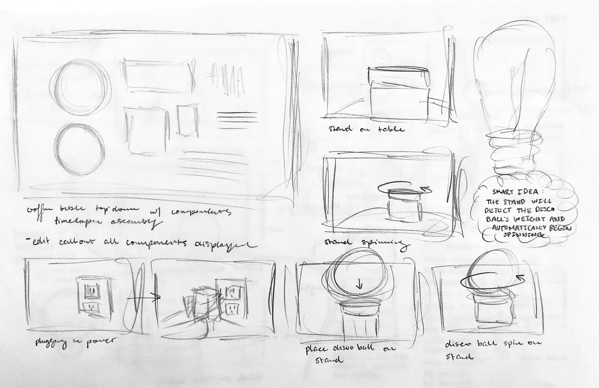

A4: Video Prototype
November 13, 2021

The Goal
Create a 1-2 minute video that comprehensively and concisely communicates the motivation, usage, and functionality of the disco ball stand, reimagined as a smart object.
Redesigning the Disco Ball Stand
As documented in my previous assignment, I modeled and 3D-printed a stand to hold a disco ball that a friend had gifted me. To improve upon this first stand, I wanted my second prototype to spin. The smart aspect of my reimagined object would be the stand's ability to smartly detect the disco ball's weight and to automatically begin spinning once the user has placed the disco ball on the stand; this would be faked in the video. Here were a few of my key design considerations:
- The stand should spin the disco ball. Utilize a microcontroller and stepper motor to achieve this.
- The stand should only be as tall as necessary to house all electronic components and remain sound in structure.
- Colorful electronics should be hidden.
- Combine 3D-printing and laser-cutting methods to build the stand.
- Later on, I'll want the stand to light up. The stand's design should consider the placement of LEDs for later installation. Since the stand will spin, the LEDs must be placed in a location that doesn't spin to avoid the tangling of wires.
- The stand should be 3D-printed from a clear material that will diffuse the LED lights.
With these design considerations in mind, I began working on my first redesign of the disco ball stand.
First Redesign
First redesign.
The new stand would have 3 main components: a 3D-printed bowl for spinning the disco ball, a 3D-printed shell to house the bowl and electronics, and a flexible laser-cut exterior to hide the electronics. I would use an ESP8266 microcontroller to program the stepper motor and eventually the installed lights. I chose an ESP8266, because it's small and is a low cost Wi-Fi microchip that would allow experimentation with IoT applications later on.
My biggest concern was my stepper motor's ability to support and spin the weight of the disco ball. So I tested it! I roughly attached my first prototype onto the motor, placed the disco ball on top, and surprisingly, the stepper motor was able to spin the disco ball! I did however, learn that I had to redesign the stand again to be more structurally sound with a rotating motor. This test taught me that the motor had to be firmly planted on a flat surface, otherwise, the weight of the disco ball would cause the motor's body to spin instead of the disco ball. I had to redesign my first idea to be more structurally sound.
Additionally, I wanted to eventually light up the stand with 5 individual RGB LEDs, but I realized that I didn't have enough pins on my microcontroller to support all 5. I had to rethink the first redesign to consider an LED strip instead.
Second Redesign
Second redesign.
I made slight changes to the internal structure of the second redesign to include a ledge that would support a laser-cut disk that I would attach the stepper motor onto. The ledge and disk would ensure that the motor resides above the microcontroller and has a sturdy base to stick to. I also redesigned the bowl that holds the disco ball to be smaller around the base to allow more room for the LED strip.
I was confident that this redesign would be structurally sound so I began prototyping!
Prototyping
Here were the steps I that took:
- 3D-model all printed components in SolidWorks.
- 3D-print all modeled components in clear PLA.
- Laser-cut plywood components.
- Program microcontroller to rotate stepper motor.
- Assemble components.
- Create shot list / storyboards for video.
- Film shots.
- Edit video and upload to YouTube.
Modeling in SolidWorks
I modeled the shell and bowl in SolidWorks! The main operations I used were extrude, extrude cut, revolution, and fillet.
Disco_Shell
Disco_Bowl
3D Printing
The shell was a 10hr54min print and the bowl was a 4hr39min print. After printing the bowl, I realized that the fit could have been a bit better so I made small adjustments to the model and reprinted.
Laser Cutting
I laser cut the exterior piece of 5mm thick plywood that wrapped around the shell, a disk to mount the bowl on, and a disk to mount the motor onto. I used a wave lattice kerf pattern to laser cut the exterior wood to be flexible (pattern can be found here).
This process took a bit longer than expected. The first time I tried laser-cutting the exterior piece, it ended up being a little too short to fully wrap around the stand. I also forgot to cut out the hole I needed to connect the electronics to power. I modified the Illustrator file to cut this piece longer than needed, added the hole, and then slowly cut off the end of the exterior piece a few bits at a time until I got the sizing right.
Laser cutting in progress.
Two kerf patterns I experimented with.
Realizing my first attempt at the exterior piece was too short, and I forgot to cut out the hole for power.
Programming the ESP8266
Programming the microcontroller was simple. The only thing I needed to program was the continuous revolution of the stepper motor. I powered the board and the motor with a 5V wall power supply.
Assembly
Once all components were completed, I started the final assembly! I inserted all electronics, attached the motor and bowl to their respective laser cut disks, and super glued the exterior wood piece to the outside of the shell. Once all the internal layers were properly stacked, the disco ball stand was done, and I was ready to start the video making process.
Planning the Video
My goal for the video was to showcase the product. What is it? Why is it needed? What does it do? Prior to any filming, I began by making some shot lists, which sort of became a rough storyboard. Here is the general outline of the video:
- Set the scene by explaining the scenario and presenting a problem / need. I have a disco ball, but it's too heavy to hang up so it rolls around the apartment. I need a solution!
- Showcase the redesigned product and breakdown its components. Timelapse the stand's assembly or callout the different components.
- Showcase what makes the reimagined product smart and what it does. Use cuts to make the stand appear responsive and describe feature with text.
- Display functioning product within home. Various shots of the stand and disco ball.

Sketches of different shots I wanted to film.
More sketches.
Filming
I wish I had spent a bit more time planning, but I was running low on time, so I threw myself into filming. I didn't end up filming everything on my shot list, because as I filmed, I knew which shots I would want to include in the final video and removed shots from the list that I found redundant. I used a tripod and experimented with colorful background lighting during this process.
Editing
I edited my video with Adobe Premiere Pro! I struggled a bit at the beginning, because when I began to put the shots together as planned, it began to feel like an infomercial I'd see on TV when I was seven years old. I needed to rethink how I was going to present the problem and what I was going to do to fix it (disco ball rolling around and making the stand).
I solved this issue by introducing a text message exchange at the beginning of my video that explains the scenario, introduces the problem, and showcases a need for the product. I learned how to do the text message exchange with this YouTube tutorial. The rest of the editing was smooth sailing.
Video
Here's my final video! In this video, I present a need for the disco ball stand, list its features, showcase its smart feature, and display it within my home. Note that the video prototype I brought to critique had no sound. I later added messaging sound effects and a track I got from Adobe Stock Audio.
I hope to make another updated video in the future once I've added lights to the stand.
Analysis
I presented my video on critique day (11/09/2021) to my class and received feedback from my instructors and 7 of my classmates.
Critique Feedback and Improvements:
-
Show vs. tell by including more shots of yourself having difficulty hanging the disco ball up.
- Improvement: The introductory text messaging exchange could overlay a shot of me attempting to hang the ball up.
-
Bring the text messaging back around at the end for a more complete resolution.
- Improvement: There could be a brief two message exchange between the two texters at the end, where one shares an image of the final stand and the other reacts.
-
Add audio to the video to make it more exciting.
- I made this change!
- The introductory text message exchange was a creative and concise way to set the scene and introduce the problem/need.
- The shots look well done, and the video is clear. There was no confusion.
- The redesign of the disco ball stand is successful.
What I Would Do Differently in the Future:
- I wish that I had taken more photos throughout the process. I forgot to take photos of the 3D printed and laser cut components prior to assembly.
- Allocate more time towards video planning, filming, and editing in the future! Although I did plan, I ended up scrapping a large portion of my video plan, since it didn't look like what I had imagined when being executed. Make time to experiment with different shots!
Key Findings and Learnings:
- Test the design throughout the process! If I had not tested my stepper motor's ability to spin the disco ball or my first redesign of the stand during the process, I would have wasted a lot of time printing a structure that wouldn't have been supportive enough. Quick tests help inform the design, reduce anxieties about whether something will work, and save time overall.
- This entire process was a lot of trial and error. I spent a little over 24 hours outside of class at the Mill working on the design, 3D-printing, laser-cutting, and assembly of this stand. I spent around 32 hours on this assignment total, including 3D-modeling, programming the microcontroller, making shot lists, filming, and editing. During this time, I was able to make mistakes, learn from them, modify my designs, and make multiple versions of different components.
Would you like to create this disco ball stand? All files can be found on my GitHub!